Electrophysiology: electrical signalling in the body
Learning objectives
By the end of this chapter, you will:
- understand common electrical terms and how they relate to electrical signalling by neurons
- understand the ionic basis of the membrane potential.
Key electricity concepts
Neurons signal electrically.
They receive inputs from other cells, sum up all these inputs, and generate an electrical impulse, called an action potential, which they send along their axon. Neurons are not the only cells that to use electricity to function. Muscle cells also use electrical signals to constrict and dilate.
We will be going into some detail to understand how neurons are able to use electricity to signal in this manner, but first it’s worth going over some key electricity concepts.
- Electrical currents are flows of charged particles. In an electrical circuit in a torch, where a battery powers a lamp (Figure 3.1a), the charged particles are negatively charged electrons flowing in a wire. In your body the charged particles are ions – such as the sodium ion, Na+.
- Charged particles flow because they are repelled by similar charges and attracted by opposite charges, i.e. positively charged particles attract negatively charged particles, while negatively charged particles repel other negatively charged particles, and positively charged particles repel other positively charged particles.
- Charged particles only flow if they can pass through the substance that they are in. Electrons can only flow around an electrical circuit when the circuit is complete. If the circuit is broken by opening a switch, because the electrons can’t easily pass through air, they can’t flow any more and the torch lamp will go off. The ability of a material to let electricity flow through it is termed conductance. The inverse of conductance is resistance – a measure of how much a material resists the flow of electricity.
- Voltage is a measure of how much potential there is for charged particles to flow and is a measure of stored electrical energy. This electrical potential is analogous to storing water high up in a water tower. Because of gravity, the water has lots of potential to flow, but it cannot do this until a tap is opened. When a tap is turned on water flows out of the pipe (Figure 3.1b). A battery works like a water tower to store electrical energy. Batteries have a positive and a negative pole. When a circuit is connected, electrons are repelled from the negative pole towards the positive pole of the battery.
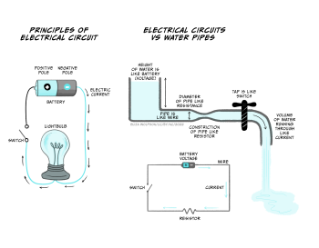
The current flowing in a circuit is related to the voltage across the circuit and the conductance or resistance of the wires making up the circuit, according to Ohm’s Law.
Ohm’s Law
Current is proportional to voltage and conductance, and inversely proportional to resistance:
Current = Voltage x Conductance
OR
Current = Voltage / Resistance
You can come back and look at Ohm’s law later when you start thinking about currents flowing in neurons.
As you can see, if resistance goes up, and the voltage stays the same, the current (flow of charged particles) will decrease. Conversely when the resistance goes down, the current will increase. In the water pipe analogy (Figure 3.1b), high resistance is like having narrow pipes. If the hole in the middle of the pipe is tiny, you won’t get very much water squirting out, never mind how big the water pressure is, but if you make the hole bigger (increasing the conductance or reducing the resistance), a lot of water will flow out of the hole. As the water tank empties, however, the water pressure (voltage) decreases, and the water flow (current) will reduce.
Nerves conduct electricity more slowly than wires
Electrical currents in the body are not exactly the same as electrical currents in a wire.
In 1849, Hermann von Helmholtz measured the speed that electricity flows in a frog’s sciatic (leg) nerve, by stimulating it electrically at one end and measuring the electrical signal at the other end. He found that the speed that electricity flowed (or was ‘conducted’) down a nerve was 30-40 m/s, around a million times slower than electricity travels through a wire.
So why is electrical signalling in nerves so much slower than in wires? In a wire, electrons (small negatively charged particles) travel along the wire, and they can do this very quickly in materials like metals that conduct electricity well. In nerves, however, the charged particles are ions, not electrons. They are positively (or sometimes negatively) charged particles that are much bigger than electrons, and they don’t move down the nerve like electrons do. Instead, during a nerve impulse – termed an action potential – positively charged ions move into the neuronal axon from the outside. When positive ions move into the cell, the inside of the cell becomes more positive.
This little bit of the axon becoming more positive triggers positive ion movements into the next little bit of the axon, which also becomes positive, triggering the ion movements across the next bit of axon, and so on, like a Mexican wave of a positive potential flowing along the nerve. On balance there has still been an electrical signal that’s moved from one end of the axon to the other, but it has got there more slowly than if electrons had just travelled along the wire.
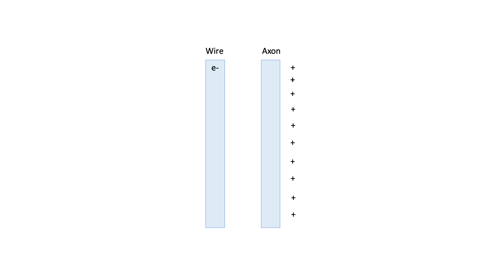
A short history of electrophysiology
The importance of electricity in animating our bodies – a step, in a way, towards generating behaviours – was discovered in the late 18th century by Lucia and Luigi Galvani.


In a laboratory in their home, the couple discovered that electricity applied to a frog’s leg made the muscle twitch. The frog’s leg muscle also twitched when it was connected to the nerve with a material that conducts electricity. They concluded that an ‘animal electricity’ is generated by the body to contract muscles.
The study of how electricity is generated and used by the body is now termed electrophysiology. Animal electricity was further studied and made (in)famous by the Galvanis’ nephew, Giovanni Aldini, who performed public demonstrations of animal electricity on the bodies of executed prisoners as well as oxen’s heads. Tales of these demonstrations of ‘Galvanism’ inspired the young Mary Shelley to write Frankenstein, in which the monster is animated using electricity.

In the mid-nineteenth century, with the development of tools to measure electrical currents, the German physiologist Emil Du-Bois Reymond was able to measure the change in current that occurs in nerves and muscles when activated – what we now term the ‘action potential’ – while Hermann von Helmholtz was able to measure the speed of conduction of electrical transmission down a nerve.
Further technological developments allowed Julius Bernstein, who had worked with both Du-Bois Reymond and Helmholtz, to record the time course of the action potential for the first time in 1868. He showed that the action potential was about 1 ms in duration and that, at its peak, the voltage rises above zero. Bernstein also measured the resting membrane potential as being around -60 mV, building on ideas developed by Walther Nernst, who proposed that the resting membrane potential is set by the potassium conductance of the membrane. Charles Ernest Overton added to this the concept that sodium and potassium exchange is critical for the excitability of cells.
. Action potentials recorded from inside a nerve fibre. Nature, Lond. 144:710")
The ionic basis of the action potential was fully elucidated between 1939 and 1952 by Alan Hodgkin and Andrew Huxley, who used the squid giant axon to make the first intracellular recordings of the action potential. They developed the use of the voltage clamp, which uses a feedback amplifier to hold a cell’s voltage at a set level. The feedback amplifier does this by detecting small changes in voltage and injecting current to reverse these changes so that the voltage across the membrane does not change. This injected current is opposite to that flowing across a cell’s membrane – if positive charge is flowing into the cell, it depolarises the cell (makes it more positive) and the amplifier will inject negative charge to counter this depolarisation. Conversely positive charge leaving the cell would make the cell would become more negative (hyperpolarised) so the amplifier will inject positive charge to counter the outward positive current and keep the voltage across the membrane constant. Therefore, the amount of current injected by the amplifier can be used to work out what currents are actually flowing across the cell’s membrane. Using voltage clamp, Hodgkin and Huxley were able to dissect the inward and outward currents and subsequently mathematically model the properties of sodium and potassium influx to accurately reproduce the action potential. These models were subsequently found to match the gating properties of voltage gated sodium and potassium channels. You’ll learn all about this in the next chapter.
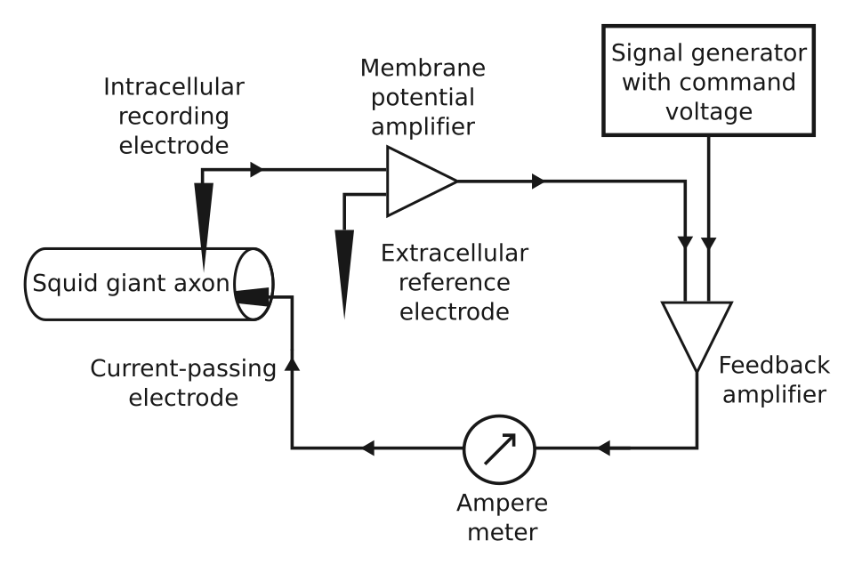
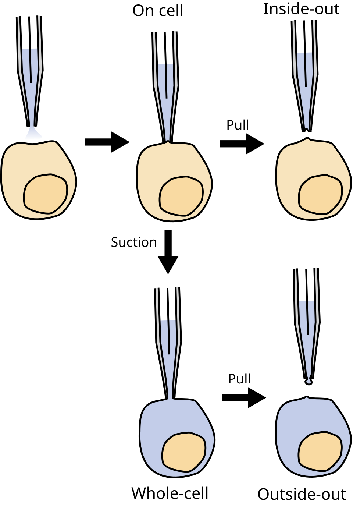
The development of patch clamping by Erwin Neher and Bert Sakmann in the 1970s and early 1980s enabled recording of very small current changes, including from single ion channels. Patch clamping involves using a glass microelectrode with a very small tip, that can be placed against a cell membrane. Applying suction tightly seals the electrode tip onto the cell so that current can only flow from the electrode across the attached membrane, reducing noise and allowing the properties of single ion channels to be studied. If the electrode is pulled away from the cell, a little patch of membrane remains on the electrode, forming an inside out patch. Different drugs can then be applied to the bath to see how they change the activity of the ion channels in this tiny patch of membrane. Alternatively, when the electrode is attached to the cell, the membrane patch attached to the electrode can be ruptured by applying increased suction. This ‘whole cell’ configuration allows membrane currents from the whole cell to be studied. Pulling the electrode away from the cell at this point can form an ‘outside-out’ patch. These different adaptations of patch clamp electrophysiology are key tools in the study of electrical properties of neuronal signalling today.

Overall, electrophysiology has generated a wealth of knowledge about how electrical signals are integrated and generated by neurons, how different ion channels contribute to these signals, and how ion channelopathies (dysfunction of ion channels) contribute to disease. For example, Dravet’s Syndrome is a severe familial epilepsy that is caused by mutations in the SCN1A gene. This gene encodes a sodium channel that is mostly found in inhibitory interneurons. Because the mutation stops sodium channels working as well, interneurons are not as able to fire action potentials to inhibit excitatory neurons which become overactive, causing seizures.
How do cells such as neurons signal electrically?
Cells signal electrically by controlling how ions cross their membranes, changing the voltage across the cell membrane. This voltage change across the cell membrane is the electrical signal. The most common ions that move across the cell membrane to cause this voltage change are sodium ions (Na+), potassium ions (K+), chloride ions (Cl–) and calcium ions (Ca2+). These ions carry different charges – sodium and potassium ions each have a single positive charge, chloride has a single negative charge, and calcium ions carry two positive charges. Positively charged ions are called cations, while negatively charged ions are called anions. The amount of charge carried by an ion is its valence.

In addition to carrying different charges, ions are different sizes.
Some ion flow, or flux, happens at rest, and other flux happens during signalling.
In this section, we’ll consider what’s going on at rest, and in the next section, examine what happens to make an electrical signal.
The plasma membrane around a cell is made of a phospholipid bilayer
")
Cells are surrounded by a plasma membrane that keeps the inside separate from the outside. This membrane is made of molecules called phospholipids. Phospholipids have three main parts: two fatty tails that are hydrophobic (meaning they ‘fear water’) and a head that is hydrophilic (meaning it ‘loves water’). Water molecules are slightly charged, with positively charged and negatively charged zones (they are dipoles). This means that other particles that are charged are attracted to them, whereas particles with no charge are repelled by them. The phospholipid head carries a negatively charged phosphate group, so is attracted to water, while the uncharged fatty tails are repelled by water, but will happily mix with other uncharged tails. This means that the phospholipid molecules line up to form a bilayer (two parallel layers of phospholipid molecules) with their fatty tails next to each other on the inside of the membrane, and the hydrophilic heads lined up facing the watery inside and outside of the cell.
Small molecules such as oxygen and carbon dioxide can diffuse across the membrane, but because the inside of the membrane is uncharged and hydrophobic, water and other charged particles can’t cross it. This means the inside of the cell is kept separate from the outside and the intracellular fluid, or cytosol, inside the cell can have a different constitution than the fluid outside the cell – the extracellular fluid.
Components of intracellular vs extracellular fluid
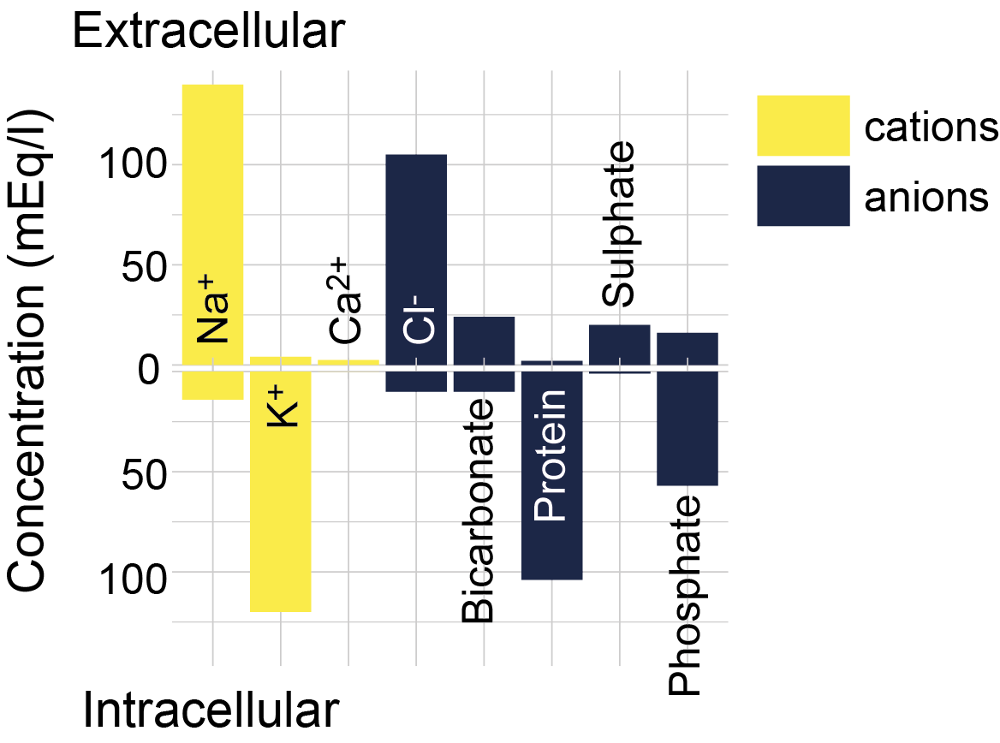
Intracellular (ICF) and extracellular fluids (ECF) are made up of different substances (Figure 3.10). Both are mostly water, but the concentration of ions and other substances is very different. Of particular note, there is a higher concentration of potassium ions inside the cell compared to outside the cell (~130 mM inside vs. ~4 mM outside), and a high concentration of sodium ions outside the cell compared to the inside of the cell (~145 mM outside vs. ~15 mM inside). There are also more chloride and calcium ions outside the cell than inside the cell. ICF also contains more protein and a higher concentration of organic anions than ECF.
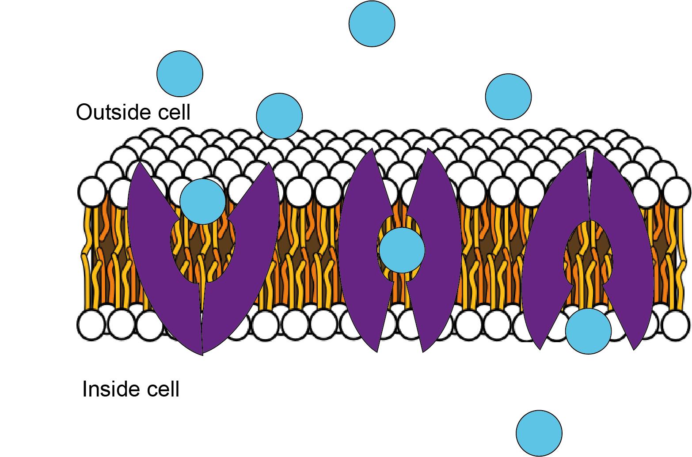
Ion channels and transporters allow substances to cross the plasma membrane
If the cell membrane was just made up of the phospholipid bilayer and nothing else, then no ions would ever be able to cross the membrane, and no electrical signalling would be possible. However, lots of proteins are embedded in the lipid membrane. Some of these are transporter proteins that can shuttle specific molecules across the membrane (Figure 3.11). For example, glucose is brought into the cell via glucose transporters.
.pdf)")
As well as transporters, ion channels are also proteins that are embedded in the plasma membrane (Figure 3.12).
These proteins form a pore in their centre which essentially makes a hole in the membrane. They can be open all the time (leak channels) or opened by different triggers, such as voltage changes (voltage-gated ion channels) or binding of different molecules (ligand-gated ion channels). Many of these ion channels are selective, i.e. they only let certain ions through. Examples of selective ion channels include potassium leak channels or voltage-gated sodium, potassium or calcium channels. This ion selectivity means that cells can control ion fluxes across their membranes by opening certain ion channels.
The resting membrane potential
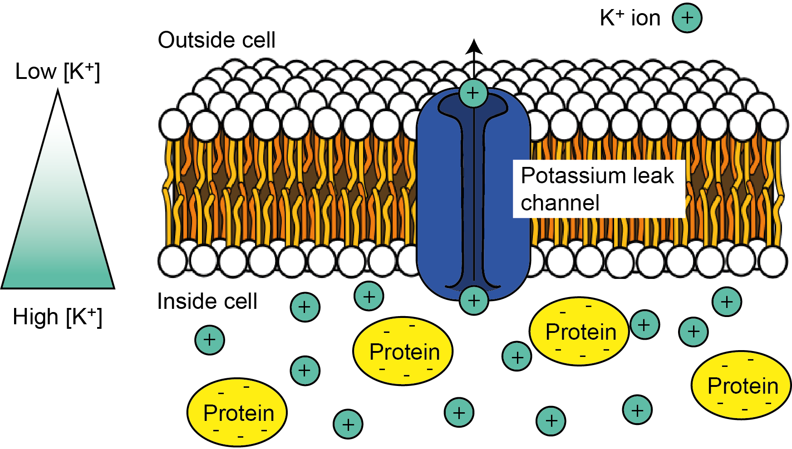
At rest, in the absence of any neuronal signalling activity, it turns out a certain type of ion channel – potassium leak channels – are open. This means that, at rest, potassium ions (K+) can leak out of the cell. Because of the K+ concentration gradient across the cell – i.e. because there are more K+ ions inside the cell – as they wiggle and jiggle and randomly move about, some ions will find these holes in the membrane and pass through them to exit the cell (Figure 3.13).
Once some positively charged K+ ions have left the cell, however, that leaves an imbalance of positive and negative charges on the inside of the cell. The inside of the cell is now more negatively charged compared to the outside of the cell. There is now a voltage, or potential difference across the cell (Figure 3.14), which we could think of as an electrical gradient.
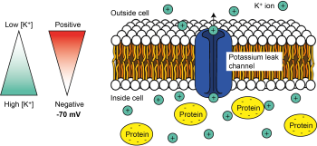
But K+ ions are positively charged, so they are attracted to negative charges and repelled by positive charges. So once there is a potential difference or electrical gradient across the cell’s membrane, the K+ ions are repelled by the positive charge outside of the cell, and attracted to the negative charge inside of the cell. For K+ ions, the electrical gradient therefore works in the opposite direction to the concentration gradient. The concentration gradient of K+, with high concentrations inside the cell and low concentrations outside the cell, tends to make K+ ions leave the cell, while the electrical gradient tends to make K+ ions enter the cell.
We call the combination of the effect of the electrical and the concentration gradient an electrochemical gradient. This movement of K+ ions out of the cell through leak channels is the main driver of the resting membrane potential of the cell – the voltage difference across its membrane at rest – which is around -70 mV in neurons.
Equilibrium potentials
EK = -80 mV
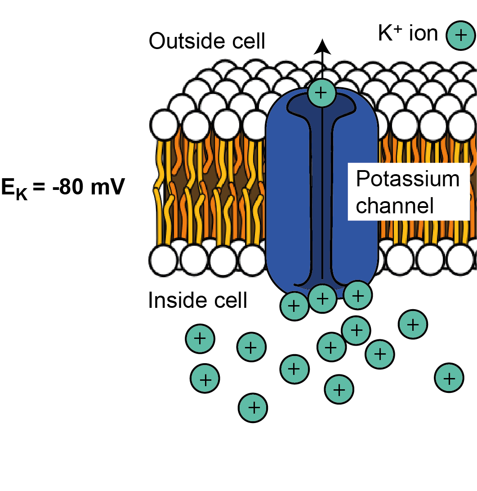
K+ ions will leave the cell down the concentration gradient until the electrical gradient is so negative that K+ ions are stopped from leaving. At this point K+ is in equilibrium – the number of ions leaving because of the concentration gradient is the same as the number entering due to the electrical gradient, so there is no net movement of K+ across the membrane. The voltage difference across the cell at which this equilibrium is reached is called the equilibrium potential for a given ion. It is dictated by the concentration difference across the membrane and the charge of the ion. We can consider different ions and how their electrochemical gradients shape the equilibrium potential for each.
As we saw above, because K+ is positively charged and is at a higher concentration inside the cell, it tends to leave the cell when channels permeable to K+ are opened in the cell membrane. Positive K+ ions leaving the cell make the cell’s membrane potential (the electrical gradient or voltage difference across the cell’s membrane) more negative. The membrane becomes more and more negative until it reaches the equilibrium potential for K+ when there is no longer any net flux (flow) of K+. Therefore the equilibrium potential for K+ is negative. For most cells, it is around -80 mV. This is often written as EK (or the electrical potential for K+) = -80 mV.
ENa = +62 mV
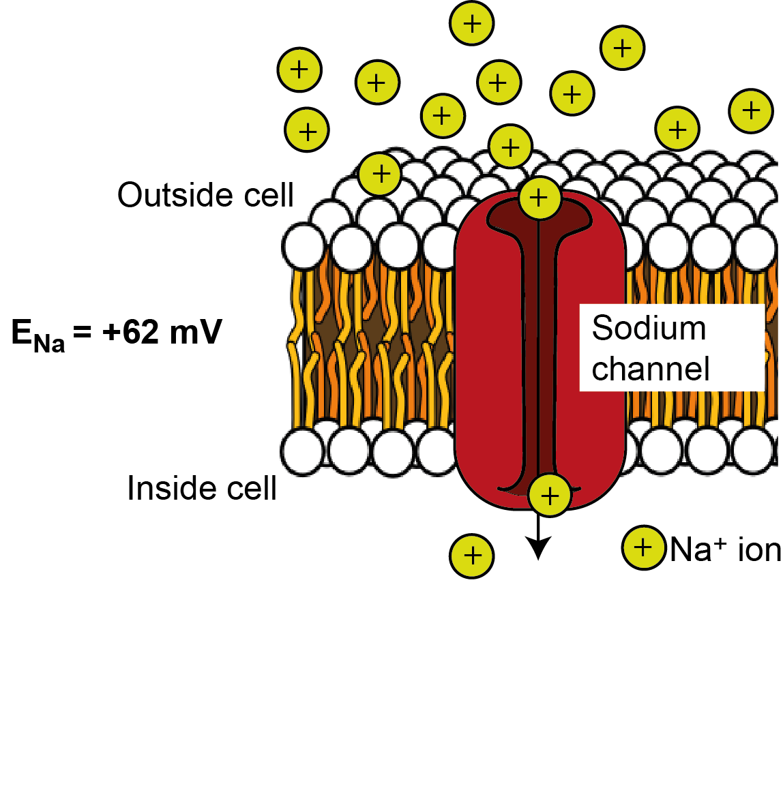
There is more sodium (Na+) outside the cell than inside the cell, so if ion channels that are permeable to Na+ open in the membrane, sodium will tend to enter down its concentration gradient. Na+ is positively charged, so initially it is attracted to the negative potential on the inside of the cell. Na+ entry makes the inside of the cell more positive, though, until enough Na+ has entered to make the inside of the cell so positive that it repels further Na+ entry. – i.e. it reaches equilibrium. This happens at around + 62 mV. Therefore the equilibrium potential for Na+ (ENa; the electrical potential across the cell where there is no net flux of Na+ ions) is +62 mV.
ECl = -65 mV
There is more chloride (Cl-) outside the cell than inside the cell, so when ion channels that are permeable to Cl- open in the membrane, Cl- tends to enter the cell. As Cl- is negatively charged, its entry makes the cell’s membrane potential more negative, until it reaches equilibrium, being sufficiently negative to repel further Cl- entry. This happens at around -65 mV, so ECl = -65 mV.
The Nernst Equation
We can mathematically calculate the equilibrium potential for different ions using the Nernst Equation.
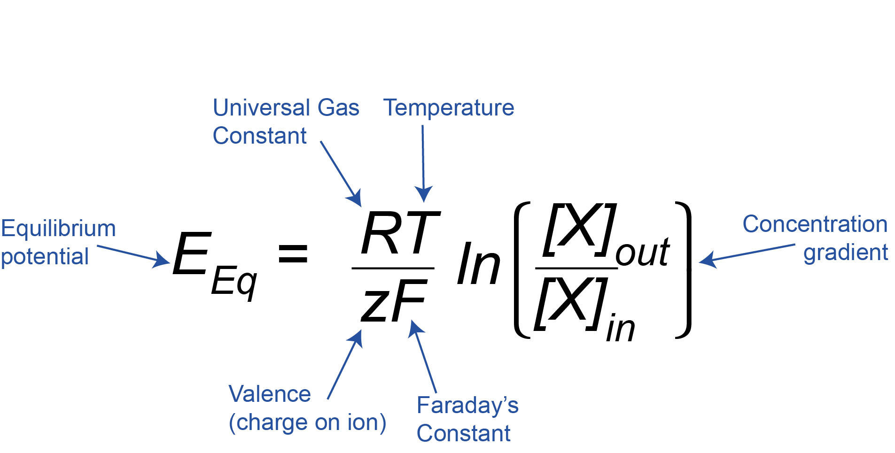
This equation might look complicated, but if we break it down we can see that it just relates the concentration gradient across the membrane of an ion X ([X]out/[X]in, where [X] is the concentration of the ion of interest) and the charge or valence on that ion (z) to the equilibrium potential (EEq). R and F are just constants, and T is the temperature, which is constant inside the body, so we can ignore R, F, and T here, as they will always stay the same.
Logarithms and the Nernst Equation
To understand the Nernst Equation fully, we also need to understand what ‘ln’ means. This is an instruction, which means ‘take the natural log of the number inside the brackets’. (In this case, that number is the ratio of the outside and inside concentrations). The log of a number is the power to which a base number has to be raised to equal the original number. The base number can be anything. In the first example below, we are using base 10, but in the case of the natural logarithm (ln) it is a specific mathematical constant called ‘e’ or Euler’s constant. It’s roughly 2.71828.
Example 1: Logarithms to the base 10:
y is the power to which 10 must be raised to equal x, so y is the log to the base 10 (log10) of x.
y = log10(x)
10y = x
Example 2: Logarithms to the base e (natural logarithms):
In the equations below, y is the power to which e must be raised to equal x, so y is the natural log (ln, also written loge) of x.
y = ln(x)
ey = x
More about logarithms and powers
Raising a number to a positive power makes it bigger, whereas raising a number to a negative power makes it smaller (x-1 means the same as 1/x; x-2 means the same as 1/x2). Conversely, the log of a number between 0 and 1 is negative, and the log of a number over 1 is positive. For example (using 10 as the base, not e, to make the sums clearer):
102 = 100; log10(100) = 2
10-2 = 1/100 = 0.01; log10(0.01) = -2
You can find more background on powers and logarithms here. We can now look at K+, Na+ and Cl– and see how their equilibrium constants come out of this equation, even just by broadly considering the charge of the ion and whether there is more of an ion on the inside or outside of the cell.
EK = -80 mV
There is more K+ inside the cell than outside the cell, so ([K+]out/[K+]in) < 1. The natural log of <1 is negative. We then need to multiply this by the charge, which is +1 for K+. Therefore the equilibrium potential, EK, is negative.
ENa = +62 mV
There is more Na+ outside the cell than inside the cell, so [Na+]out/[Na+]in) >1. The natural log of numbers greater than 1 is positive, and this is multiplied by the charge of +1 for Na+. Therefore the equilibrium potential, ENa, is positive.
ECl = -65 mV
There is more Cl– outside the cell than inside the cell, so ([Cl–]out/[Cl–]in) >1. The natural log of numbers greater than 1 is positive, but this is then multiplied by the charge of -1 for Cl–. The equilibrium potential, ECl, is therefore negative.
The membrane potential
We have discussed that when the cell is at rest, potassium leak channels are open and this drives the resting membrane potential to be negative, at around -70 mV. But we also just saw the equilibrium potential for potassium is -80 mV. If the resting membrane potential is set by potassium flux through leak channels, why is the resting membrane potential not the same as EK? The answer is that at rest the membrane is actually also a tiny bit permeable to Na+ as a small number of sodium channels are also open. This pushes the resting membrane potential a tiny bit away from the equilibrium potential for potassium towards the equilibrium potential for sodium. The resting membrane potential is closest to EK as the membrane is most permeable to K+ ions (more K+ channels are open), but is a bit more positive than EK because of the small amount of permeability at rest to Na+ ions.
In fact, at any point during neuronal signalling or at rest, the membrane potential is set by the electrochemical gradients to different ions and the relative permeability of the membrane to these ions. Cells control their membrane potentials by opening and closing ion channels in the membrane to alter the permeability to different ions, which then flow down their electrochemical gradients into or out of the cell. When sodium channels open, for example, the permeability to Na+ increases and Na+ ions enter the cell, driving the membrane potential to more positive potentials towards the equilibrium potential for Na+, ENa. When sodium channels close, the permeability to Na+ decreases again and, as the membrane is now more permeable to K+ than Na+, the membrane potential will again become more negative, returning to the resting membrane potential. There are lots of types of ion channels that are selective for different ions and have different gating properties, i.e. they are opened and closed by different stimuli, such as changes in membrane voltage, and binding of specific molecules. We’ll discuss these more in later chapters.
The Goldman-Hodgkin-Katz equation
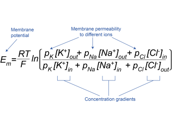
The Goldman-Hodgkin-Katz equation allows the membrane potential of the cell (Em) to be calculated from the permeabilities of the membrane to different ions (pK, pNa and pCl for K+, Na+ and Cl–, respectively) and their concentration gradients (Figure 3.19). As for the Nernst equation (see Box, Figure 3.18), R and F are constants, and T is temperature, so RT/F can be considered unchanging. During neuronal signalling, the permeability of the membrane to different ions changes, and the membrane potential is weighted in favour of the equilibrium potential of the ion with the greatest permeability at that moment. Note that the Cl– concentration gradient is expressed in reverse compared to K+ and Na+, to account for the fact that, being negatively charged, it is oppositely charged to K+ and Na+.
The sodium-potassium ATPase
We have seen above that during rest and neuronal signalling, ions flow through ion channels down their electrochemical gradients, altering the membrane potential. This flow of ions down their electrochemical gradients does not require any energy. The membrane potential is controlled by changing the permeability of the membrane to different ions, and not by changing the concentration gradients between the inside and outside of the cell. Very few ions need to flow to change the membrane potential of a cell, which means that the concentrations of ions inside and outside the cell do not change very much over the short term. However, because the membrane potential does not sit at the equilibrium potential for any ion, even at rest, there is a net K+ current or flux out of the cell and, a net Na+ flux into the cell.
Over the longer term, however, these fluxes would dissipate the ionic concentration gradients if cells did not have a mechanism to continually pump ions back to where they came from. The pump that does this really important job is the sodium-potassium pump, or the Na+/K+ ATPase. This is a protein that sits in the plasma membrane and pumps sodium out of the cell and potassium back into the cell. Because this pumping occurs against the ions’ electrochemical gradients, it requires energy in the form of ATP to pump the ions back and maintain their concentration gradients. The sodium-potassium ATPase removes a phosphate group from ATP, to form ADP, releasing some energy, which changes the shape (or conformation) of the Na+/K+ ATPase enabling it to move 3 Na+ ions out of the cell and 2 K+ ions into the cell for every ATP molecule used. Because 3 Na+ ions are removed for every 2 K+ ions brought into the cell, the Na+/K+ ATPase is electrogenic, causing a net export of positive charge. This contributes a little bit to the negative resting membrane potential, but by far the strongest effect the Na+/K+ ATPase has on the resting membrane potential is to maintain the potassium electrochemical gradient, so that the equilibrium potential for potassium is maintained. Because even at rest there are ion fluxes, the Na+/K+ ATPase is always at work, but it’s activity is increased when neurons are signalling and so more ions need to be pumped back.
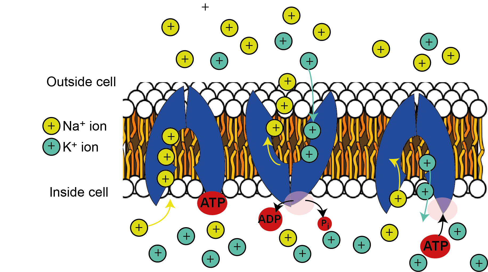
Maintaining ion concentration gradients is so important for sustaining neuronal activity that the Na+/K+ ATPase is the single most energy-consuming process in the brain, consuming over half of all the energy it uses. As the brain is a very energetically expensive organ, using 20% of the body’s energy at rest, despite comprising only 2% of the body’s mass, the Na+/K+ ATPase alone uses over 10% of the energy used by the whole body – quite staggering given there are over 20,000 different types of proteins in our bodies at any one time!
Key Takeaways
- Electrical signalling in neurons (and other cells) works because they have ion channels that allow specific ions to flow across neuronal membranes and change the membrane potential of the cell.
- The membrane potential of the cell is determined by the concentration gradient of ions across its membrane, and the permeability of its membrane to those ions.
- Ions flow down their electrochemical gradients, which doesn’t need any energy, but energy in the form of ATP must be used up to fuel the Na+/K+ ATPase which pumps ions back up their electrochemical gradients to maintain their concentration gradients across the membrane.